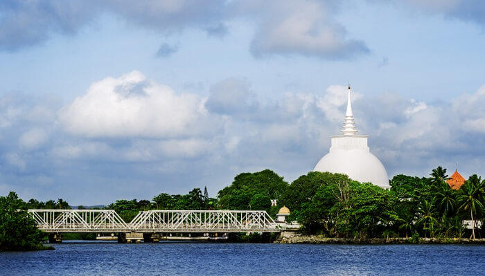
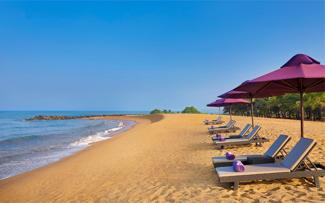
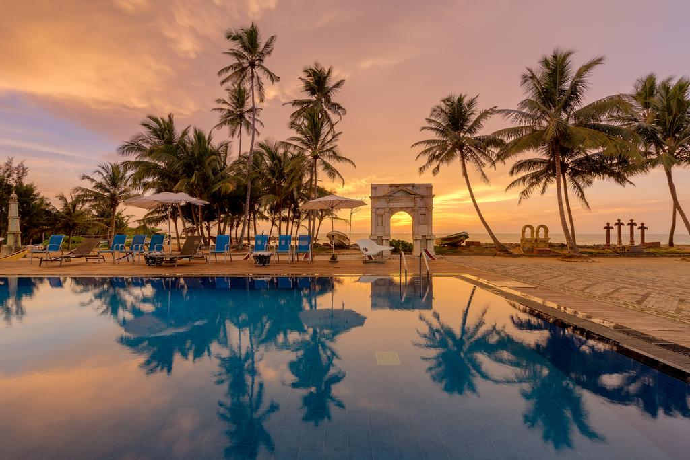
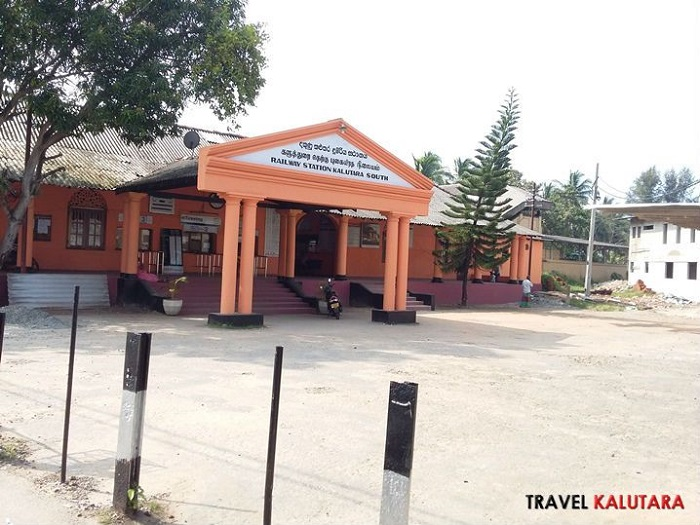
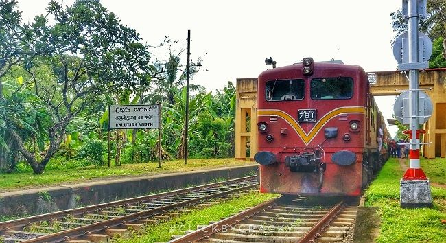
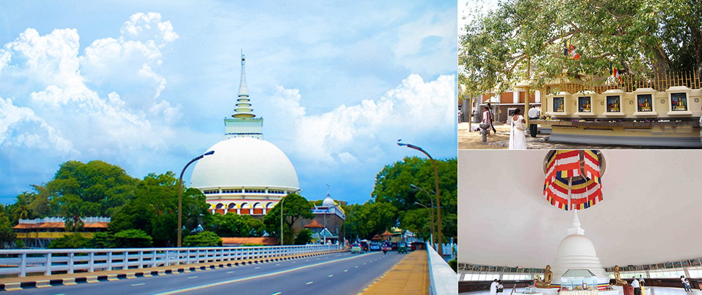
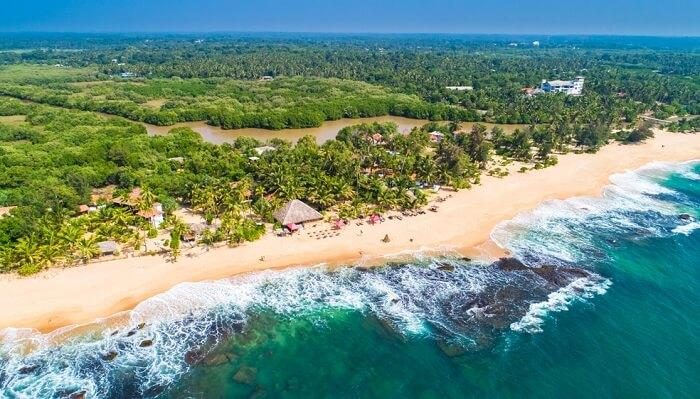

Provide great service for your safe journey
|
Kalutara or Kalutotais a major city in Kalutara District, Western Province, Sri Lanka.
It is also the administrative capital of Kalutara District. |
 |
|  | |
 |
Kaluthara has two main railway sations called Kaluthara South Railway Station(The main station) and Kaluthara North Railway Station.
Among two stations Kaluthara South Railway Station is the main station and usually people called Kaluthara Station for this
station and main operations are done here.All long-distance express trains running on the coastal railway line stop here. Slow
ones too. You can get there by following the road just next to the bus stand or there is a shortcut to the right just past
Kalutara Bodhiya lower terrace.
You can take trains to Aluthgama, Bentota, Hikkaduwa, Galle, Matara and even to Kandy and Anuradhapura from this station.

Kaluthara North station is located just 2.5 Km to north from the town, this station is pretty low key compared to its counterpart. All slow trains stop here.Because of that this station is quite crowded in the morning.

|
 |
 |
|